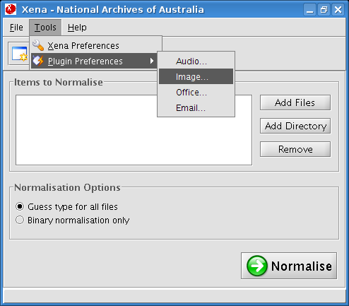

Image
The majority of images are converted internally via Xena itself without the need for external tools.
However, a small subset of image file types do require the external tool, Convert, to enable conversion.
- Convert is part of the free and open source ImageMagick software suite (http://www.imagemagick.org) for displaying, converting and editing raster image files.
Xena also employs the use of another external application called Tesseract.
Tesseract performs OCR on TIFF images, which are commonly the result of scanned paper documents,
to create a text version of the TIFF.
- Tesseract (http://code.google.com/p/tesseract-ocr/) is a free and open source OCR engine used to create text versions of certain files.
Note: Specifying the location of either of these external applications is optional.
Without ImageMagick, some types of images will not be converted to PNG, and will be binary normalised.
Without Tesseract, image files will still be converted to PNG and preserved but text versions of TIFF images will not be created.
Location of external programs
Depending on your operating system, the Convert (ImageMagick) and Tesseract executables may be included with the
Xena package. If so, the executables will be located within a sub-directory of the directory containing the
Xena program (xena.jar). Otherwise, the executables must be installed separately.
- Linux - install imagemagick and tesseract-ocr via your distribution's package manager. After installation, the executables are most likely located under /usr/bin/.
- OS X - the files are called convert and tesseract which will be located in the macx86 sub-directory.
- Windows - the files are called convert.exe and tesseract.exe which will be located in the win32 sub-directory.
How to configure the Image plugin
- From the Xena menu bar, select Tools - Plugin Preferences - Image:

Result: The image properties window is displayed.

- In the Location of ImageMagick Convert Executable field:
- Click the Browse button.
- Navigate to the location of the ImageMagick Convert executable (see above).
- Click Open.
- In the Location of Tesseract Executable field:
- Click the Browse button.
- Navigate to the location of the Tesseract executable (see above).
- Click Open.
- Click OK to save the settings.